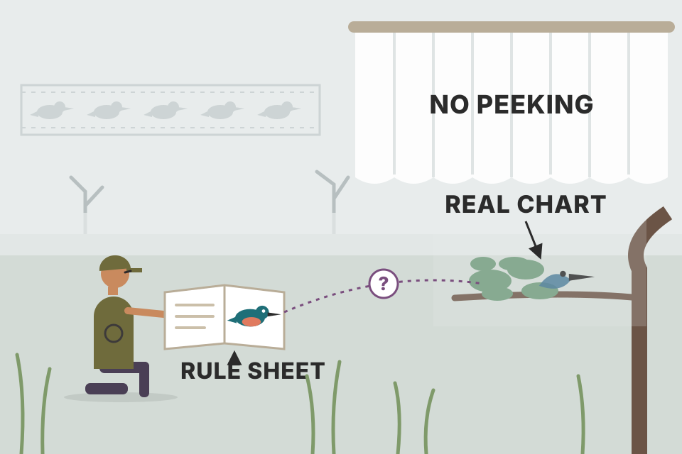
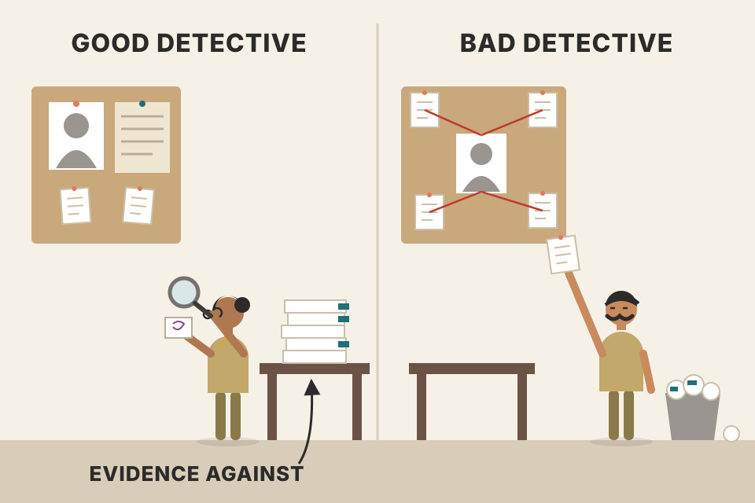
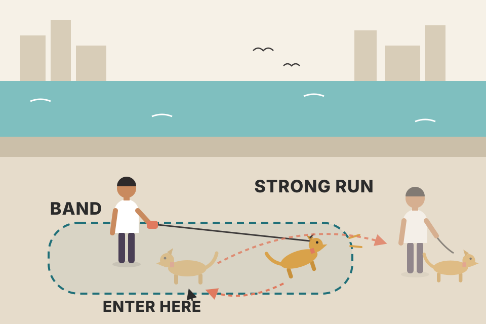
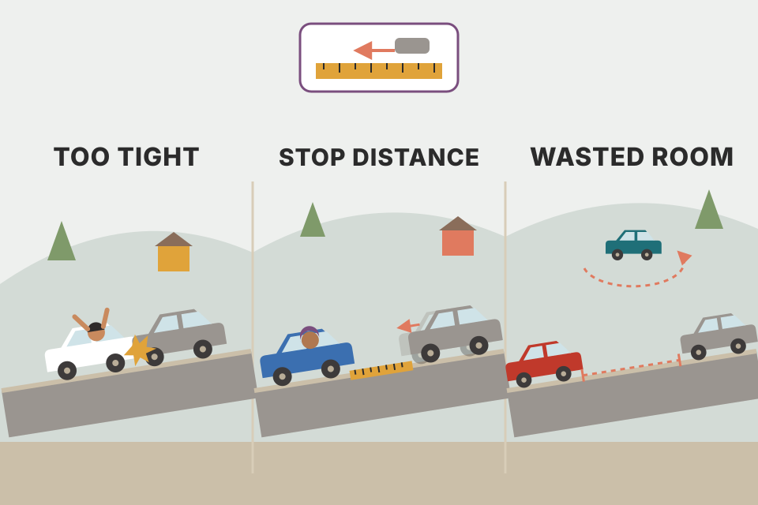

A market is running and you missed the start. Do you chase it? Module 4 says no. Wait for the dip, called the pullback, and get in there. The module also teaches you to test a trade before you trust it. Every chart here uses simulated prices, built to show one idea. They are not proof about real markets.
Picture the share of a strong company. For six weeks it climbs, from ₹1,400 to ₹1,560. Then it slips for four days, down to ₹1,500. Nothing bad has happened. The buyers are only resting.
That small slip inside a rising market is a pullback. The trade in this chapter is to buy during the slip, not at the top. If the climb starts again, you ride the next push up. If price keeps falling, you sell at a price you chose in advance. You take a small loss and move on.
Grimes gives the recipe in two steps. First, wait for a trending market to make a strong move. Second, look to get in when price comes back to some kind of average price. In a falling market you do the same thing upside down. That is called going short: you make money when price falls.
But Grimes does not want you to trust the trade on his word. Most of the chapter is about checking. You keep a journal. You write exact rules. You walk through old charts one bar at a time and record every pretend trade. Then you ask a hard question. Do I win more than plain luck would?
He also shows what failing that check looks like. Fibonacci levels are famous lines that many traders draw on charts. He looked for proof for years and found none. So he dropped them.
| Word | What it means, in plain words |
|---|---|
| Trend | A market that keeps moving mostly one way, up or down, for a while. |
| Pullback | A short move against the trend, before the trend carries on. |
| Swing (or leg) | One clear move up or down, between two turning points. |
| Bar and timeframe | A bar is the drawing of one slice of trading: its open, high, low and close. The timeframe is how long each slice is, such as a day, a week or 2 minutes. |
| Stop | The price where you give up and get out. You pick it before you enter. |
| R | The money you planned to lose if the stop is hit. A win of 2R made twice that amount. |
| Expected value | The average you win or lose per trade, over many trades. It is usually counted in R. |
| Edge | A real advantage that repeats. Over many trades you come out ahead of plain luck. |
| Backtest | Trying your rules on old price data, to see how they would have done. |
| Moving average and EMA | The average price of the last few bars, worked out again on every bar. An EMA is one kind. It gives newer bars more weight. |
| ATR | Average true range. It tells you how far price usually moves in one bar. |
| Band | Two lines drawn above and below the moving average. When price reaches a band, it has moved unusually far. Keltner and Bollinger are two kinds of band. |
This is a workbook, so the homework comes first (sections 02 to 05). The essays follow (06 to 11). The trade itself is explained only in sections 12 to 16. Want the trade first? Jump to section 12, then come back.
This is a workbook chapter. It has four short homework tasks, then a set of essays. Together they form one chain.
You cannot judge a pattern you have not defined. You cannot define it without looking at many examples. And you cannot trust it without records and a fair comparison.
Each row below is one link in that chain. The numbers in brackets are section numbers on this page.
Ask ten traders about pullbacks and all ten will nod. They know the word. Grimes thinks many of them still miss how useful the pattern is.
A pullback is a short move against the trend, before the trend carries on. In an uptrend it is a dip. This whole module is built around that small move.
He gives the module three jobs:
A word on that detour. A swing is one move up or down between two turning points. Many traders believe swings follow Fibonacci ratios, a set of famous numbers. Grimes studies the shape and ratios of swings to see if that claim holds.
The research project has two goals. One is to understand the edge in the pattern. An edge is a real advantage that repeats over many trades. The other goal is to learn how testing any idea works.
Grimes says this lays a base for two things. The first is discretionary trading, where you decide by eye and not by fixed rules. The second is deeper work with numbers.
The workbook pages for this module mention expected value. They do not work through the sum. Every later section leans on it, so here it is.
This box is not in the book. I added it.
You need two words first. A stop is the price where you give up and get out. You pick it before you enter. R is the money you planned to lose if the stop is hit.
Say you risk ₹1,000 on every trade. That is 1R. A win of ₹2,000 is then +2R. Now every result speaks the same language, on big trades and small ones. So measure every result in R.
Call the share of trades you win p. Call your average win W, counted in R. Your average loss is 1R. Then expected value, the average result per trade, is:
Try it with 51.5% wins at 2R. You get 0.515 × 2 − 0.485 × 1 = 0.545R per trade, before costs. So each trade earns about half of what it risks, on average.
This is the same formula, and the same example, as in your Notes/trading/concepts/trading_equations.md.
Now play with it. Move the two sliders and watch what luck does to 200 pretend traders.
Expected value is the slope of a road. The road itself is bumpy. Send 200 drivers up the same slope. After 100 trades they end up in very different places. The shaded band on the chart holds the middle 80% of them.
Even on a gentle upward slope, many drivers stay below zero for a long time. Where the picture breaks: on a real road every driver hits the same bumps. In trading, each trader gets different ones.
Each line on the chart is one pretend trader. Each takes 100 trades with exactly the win rate and payoff you set. The trades are independent. That means one result does not change the next. All of it is simulated.
On average, the line climbs by E on each trade. But luck pushes each trader above or below that line. And the gap made by luck keeps growing as trades pile up. It grows slower than the profit does, but it does grow. (In maths words: it grows with the square root of the number of trades).
This is why Grimes keeps asking for a significant number of trades before you trust a result. Ten trades tell you almost nothing. Section 03 comes back to this.
It is also why "does it work?" is a question about statistics. Sections 08–09 take that up.
Notes/trading/concepts/using_equations_to_trade.md runs a sizing Monte Carlo on your 51.5% / 2R setup. A Monte Carlo is many random pretend runs, like the chart above. It is the same idea, with position sizing added on top.This module has fewer pages than the earlier ones. So is it less work? Grimes says no. That is an illusion.
The work moves from reading to you doing it. And the doing starts with keeping records. You need two: a journal and a P&L sheet.
Start now. Today. You can decide the format and the contents later.
What matters is that it becomes a routine you do consistently. Grimes wants it to be a habit. He expects that habit to play a big part in your success.
What if you do not know what to write? Then write that you do not know. Here are his other ideas:
Yes, kittens. The topic does not matter. Write a little every day and let the practice grow.
P&L means profit and loss. A P&L sheet is a table with one row per trade. Grimes wants it to record at least four things for each trade:
You will use the sheet in this week's research project (section 03).
People often skip the initial stop. Do not skip it. It is the one field that lets you measure every trade in R. The sheet below does that sum for you. Type your own numbers in.
Row 1 is a long trade. Long means you buy first and hope price rises. You buy at 1520 with the initial stop at 1490. So 1R = 30. You sell at 1588. The result is (1588 − 1520) ÷ 30 = +2.27R.
Row 3 is a short. You sell first and hope price falls, so the stop sits above the entry. In at 2310, stop at 2350, so 1R = 40. Out at 2268. The result is (2310 − 2268) ÷ 40 = +1.05R.
The sheet looks at where the stop is and works out the direction from that. Then it averages R across all rows. That average is the expected value from section 01. This time it is measured, not assumed.
The journal is a diary. The P&L sheet is a lab notebook. The diary tells you how you felt and what you saw. The notebook gives you the numbers. With the numbers you can check if those feelings were right.
Where the picture breaks: a lab can repeat the same experiment. The market never gives you the same day twice.
Suppose you leave out the initial stop. Then all you can record is money won or lost. That mixes up two things: how good the idea was, and how big you happened to trade.
Now divide each result by the risk you planned. Every trade turns into the same unit. A trade in a ₹400 stock and a trade in a ₹4,000 stock can be averaged together.
Counting results in R is standard practice among traders. The four fields are Grimes'. The R sums on this page are mine.
First, a warning from Grimes. This is not a proper, strict statistical backtest. It is a way of working that does four things:
You need two things: old charts, and a way to keep records. Pencil and paper will work. Electronic formats are much better.
Then you must define the pattern. That is hard. Grimes admits there is some discretion in it, which means judging by eye. He left that in on purpose.
Do not be discouraged. The way you see the pattern will change. What changes it is looking at lots of market data. This is a skill you learn only by doing.
Take some time and write a rule sheet. Really write it down. It must answer his five questions.
The grey hints in the boxes use words like EMA and Keltner channel. Do not worry about them yet. Sections 13 to 15 explain them.
Now go through market data bar by bar. For each "trade", record the key numbers. See how it works, and notice how it feels.
Your feeling counts. Grimes says that at this first stage the exercise is as much about you as about the market. And like anything else, it gets easier the more you do it.
A valid test needs a significant number of trades. But this week, the job is only to get started.
The replay below is that exercise on a simulated market. You see only the past. Press Next bar, look, and decide. The lines around price are a band called a Keltner channel. Section 13 explains it.

Learning to see pullbacks is like learning to spot birds. The guidebook is your rule sheet. It gets you started. But you only get good after seeing hundreds of real birds, in bad light, half hidden. The replay is the bad light. You cannot peek at what comes next.
Where the picture breaks: a sparrow is still a sparrow next year. A pullback that worked last year may stop working.
Look at a finished chart. Every good pullback looks obvious, because you can see how it ended. That is hindsight. Hiding the future takes the hindsight away.
Writing the rules first does a second job. It stops you from quietly changing the definition to fit the examples. And recording the initial stop lets you compare every result in R.
These three habits are the heart of any honest backtest, done by hand or in code.
How the replay fills your orders is my choice, not Grimes'. Your entry fills at the bar's close. Stops and targets fill at their own price. If the market gaps past that price, they fill at the open. A gap is a jump between one bar's close and the next bar's open.
Notes/trading/backtests/backtest_results_summary.md is this exercise in code. It needs a weekly uptrend, which means close > 50-week > 200-week average. Then a dip to the 20-week EMA. It buys when a week closes above last week's high. It uses a 2.5 ATR stop and a 2R target.Charting by hand means drawing the price bars yourself, with pencil and paper. You began this in earlier modules. Keep doing it all through this one.
You have already seen several ways to do the exercise. Pick one that works for you. The details are not important. Doing it is.
It should not eat your time. Grimes jokes that this is not a special torture he invented. He asks for a few minutes every day. If you trade intraday, which means in and out within one day, make it a few minutes each hour.
The one firm rule is every day. The reward he promises is a deep understanding of price action. That is the way price moves from bar to bar.
Try it below. Each bar arrives as four numbers: open (O), high (H), low (L) and close (C). Press the button and the next bar is drawn from its numbers.
Copying a painting by hand teaches you more about it than looking at it a hundred times. Drawing a bar works the same way. You turn four numbers into one bar, and that forces you to notice things. Where does the close sit in the range? Is this bar bigger than the last few? Did it open with a gap?
Where the picture breaks: a painting is finished. A chart gets a new bar tomorrow.
When software draws the chart, you see shapes. When you draw it, you handle each open, high, low and close one at a time. And you compare each one with what came before.
That slow, repeated comparing builds a memory for patterns. The pullback test in section 03 depends on that memory.
The readings come from Grimes' earlier book. Its full title is The Art and Science of Technical Analysis: Market Structure, Price Action, and Trading Strategies. Wiley published it in 2012.
The page numbers below are that book's printed pages.
| Printed pages (2012 book) | Topic |
|---|---|
| 65–77 | Pullback introduction |
| 154–169 | Pullback in detail |
| 291–315 | Pullback examples |
| 385–388 | Journaling |
Why these pages? Grimes says they move you from big-picture theory to applied patterns. Those are patterns you can really trade.
You will see many examples of the pullback. You will also think about how to manage trades that start from it. Both give you good ideas for exploring this market behaviour further.
books/trading/) has only this workbook. It does not have the 2012 book. The workbook's PDF file name is misleading. Sections 12–16 below cover the workbook's own essay on pullbacks.What do winning traders have in common? At first look, not much. Their strategies, methods and personalities differ a lot.
But talk to traders who make money steadily, and a few threads repeat. Winners do some things that losing traders often skip. Keeping a trading journal, of some kind, is one of them.
A reader of Grimes' blog asked what should go into a daily journal. The questions were:
The reader agreed that market structure and context matter a lot. But they were not sure that writing all this down was improving their decisions.
You need some kind of journal. But there is no single right kind. He makes four points.
All the plans and good intentions in the world are worth nothing without follow-through. So make the journal realistic.
Say your journal needs three forms and a page of writing, twice a day. You will probably not keep that up. Now say you scribble three lines at the end of the week: "Good week, made a ton of money, bought pizza". That will not teach you much.
The key is the balance between easy to do and detailed enough to be useful.
You might write daily, weekly or monthly. That depends on your timeframe. Either way, it is a matter of discipline. And in trading, discipline means always. Get into the routine and do it without fail.
Grimes adds a note from his own experience. The less you want to do the journal, the more you need to. Never underestimate how good your mind is at dodging tasks that really need doing.
He often suggests two: a market research journal and a personal, behavioural journal. They can be one book. But he finds it useful to shine the spotlight of his attention on the market, then on himself, in turn.
That separates what the market did from mistakes he made as a trader. He sees this as an important part of knowing who you are as a trader.
Grimes is convinced that pencil and paper use a different part of the brain. Writing by hand helps you learn in a different way. You feel the rhythm of your hand. You pace your thoughts to match it. You watch your ideas take form in the outside world. He calls that powerful magic.
But paper is hard to search. Say you want to study one market habit across five years of journals. A pile of Moleskine notebooks, tied with string in the corner of a closet, makes that painful. A database, or even a searchable document, is far easier to review.
His own answer is to do a lot on paper and keep research as a separate job. Research is done in Python, Stata or Excel. The journal he wants to hold in his hands. People differ, and there is no right or wrong here.
Grimes says these points are enough to get you started on this very important practice.
A flight recorder has two tracks. One holds the instruments: what the plane did. The other holds the cockpit voices: what the crew did. After an accident, investigators need both. Only then can they tell a machine failure from a pilot error. Two journals do the same for a losing week.
Where the picture breaks: the recorder runs by itself. Your journals exist only if you write them.
A setup is the pattern that makes you take a trade. A losing trade can come from two places. The setup was weak. Or the setup was good and you traded it badly.
Mix both into one record and you cannot tell which it was. Split them and you get two clean questions. Research asks: does this pattern have an edge? Behaviour asks: did I trade it the way I said I would?
That split is also why the replay in section 03 keeps the numbers apart from your rule sheet.
projects/trading-equation-backtests/ work is already a research journal. What is missing is the behavioural half.Learning to trade asks for two skills that pull against each other.
On one side you need iron discipline. You must rule parts of your behaviour, and start managing your thoughts and beliefs too. On the other side you need patience and gentleness. Some changes take time. You cannot force them, even if you want the growth to be quick.
Grimes shares one exercise for this. He thinks it can bring big changes in many parts of your life, not only in trading.
Many writers have made the same point. We do not trade the market. We trade our beliefs about the market. Some beliefs help us, and some hold us back.
This is true outside markets too. Think how often people misunderstand each other. They are not really listening. They pay more attention to their own ideas about what the other person is saying.
Most people rush through life, from one experience to the next. They never dig into the beliefs and motives that drive them. Grimes quotes Socrates: the unexamined life is not worth living.
He wonders about our daily distractions. Maybe many of them exist to help us avoid that look inward, and the hard questions.
Two notes on step 2. You may add a fourth list, about the universe and reality itself. But be warned: any one of these lists could fill a thick book.
Also, Grimes calls the two kinds of belief empowering and limiting. You may think of them as good and bad. He says those are not the best labels.
Notice the switch between step 2 and step 4. First you let everything pour out, with as little judgment as you can. Then you think like an editor. Grimes gives other names for the two modes:
The cleaned lists give you a deep look into your own heart and mind.
There is a bonus. Many of the best trading practices blend different kinds of analysis, or different ways of "being". Those can pull against each other. This small exercise lets you practise balancing them.
Trading can be very stressful. Grimes thinks many people would gain a lot from working with a mental health professional at some points. This exercise asks you to be your own therapist and do your own work.
What comes next? You can start to change some limiting beliefs. Or you can learn to work inside the beliefs you have.
It is hard to change a belief by deciding to. But most people do not even notice how strongly their beliefs steer their actions and results.
So find a few quiet moments. Shut out the world and look inward. Grimes asks: why not take the first steps today?
Phase 1 is emptying a drawer onto the floor. Phase 2 is sorting the pile: keep, fix, throw away, wrong drawer. If you sort while you empty, half the drawer never comes out.
Where the picture breaks: things you throw out of a drawer stay out. An old belief can creep back, so repeat the exercise now and then.
If you judge while you list, you censor yourself. You leave out the beliefs that embarrass you. Those are often the limiting ones that matter most.
So keep the two jobs apart. First get everything onto paper. Then edit. Writers work the same way: they draft first and edit later.
Nothing you type here is saved or sent anywhere. Copy it into your journal.
Markets keep getting more competitive. To make money you need an edge. And you must truly understand your edge.
So where do you find one? And how can you be sure you understand it? Grimes shares what he learned.
Start with the question you are really asking. Whatever your method, you assume that one thing is more likely to happen than another. That is why you get in and out when you do.
Some people are confused on this point. Forget it, and you slide into thinking "x must happen" or "x will happen". Grimes calls that way of thinking dangerous. At best, x is a little more likely. So how do you know even that is true?
Quantitative analysis means checking ideas with numbers. It can look scary. At its core it is very simple. You look at many things that happened in the market. You define some conditions. Then you see if those conditions were tied to certain outcomes.
Then you make a leap, a small one you hope. If you did the work right, seeing those conditions again should make those outcomes more likely.
So every statement you can test has two parts: a condition and an outcome. "If this, then that." Here are Grimes' examples. He warns that some may be true and some false. They are only examples.
How do you answer such questions? Some half-advanced tools exist. You may have met them in a maths class long ago: linear regression, or principal component analysis. They have their place. But you do not need them for much of this work. These five steps are enough:
Three of the steps need a little more detail.
Step 1 is harder than you might think. You must choose the timeframe: daily, weekly, 1-minute? You must choose which markets. And you must choose the time span: recent, 5 years, 50 years?
Then come the thorny parts. Stocks have dividends and splits. Futures have rolls. A futures contract is a deal to buy or sell later, and it expires. A roll is the move to the next contract.
All of these change old prices on a chart, and section 11 shows how. Also, nearly every data source has some errors. So you will spend time, too much time, cleaning the data.
Step 2 can use many kinds of condition. Grimes lists these:
Step 4 can go past counting. You can also look at how big the effects are, and how much they vary. But often the plain binary counting leads to good insights.
That is really all, and it is not so scary. Define a condition, test it, look at the results. You can use pencil and paper, a spreadsheet or a programming language.
Asking questions and seeing what the data says helps you understand the market better. It also helps you find chances to trade at a profit.
A random walk is a made-up price that moves by pure chance, like a row of coin tosses. The baseline is what happens on all days, with no condition at all. It is the thing you compare against.
A doctor is testing a new medicine. She does not ask "did the patients get better?" Most people get better anyway. She asks a sharper question. Did patients on the medicine get better more often than patients without it?
The patients without it are the control group. Step 5, compare with all other data, is your control group. Where the picture breaks: a doctor chooses who gets the medicine. You cannot choose which days the market gives you.
Here is what the tester does. It builds 80 pretend markets, each 600 days long. It finds every day when your condition is true. Then it counts how often the close H days later is higher. H is the look-ahead you set.
On the pure random walk, the condition and the baseline come out about the same, give or take some noise. There is no edge to find. So an honest test finds none.
Now switch to the momentum model. Momentum means a move tends to carry on. I made each day's return lean slightly in the direction of the day before. Now new highs start to "work". They work because I built that in.
The readout also shows a z-score. It says how far a result stands from the baseline, counted in units of normal luck. Below 2, the result could easily be luck.
There are three traps here. A senior engineer will spot them.
Trap 1: signals that overlap. Say the look-ahead is 5 days. Signals on neighbouring days share most of their future. So they are not independent cases. Count them all, and the z-score looks more certain than it is. The tester avoids this. It counts at most one case in each look-ahead window.
Trap 2: the baseline is not 50%. Even on a random walk, the share of "up" results is not exactly half. That is why you compare with the baseline, and not with 50%.
Trap 3: trying many ideas. At z = 2, about 1 test in 20 on pure noise will still look significant. So if you try many conditions and keep the best one, you fool yourself.
The z-score and these three traps are not in the book. I added them.
Notes/trading/indicators/trend_vs_sideways_tools.md used exactly this design. The condition was a tool reading, such as ER, ADX or Choppiness. The outcome was how trendy the next period was. You tested 185 Nifty 200 stocks. None of the tools predicted it.Grimes once wrote a line he borrowed from Jack Schwager. You must have an edge to succeed in the market. And if you do not know what your edge is, you do not have one.
Readers wrote back with the logical question: "how do I know if I have an edge?"
He starts with a disclaimer. There are many ways to make money in markets. He tries to be broad, but his answer is coloured by his own style. He is mainly a technical trader, which means he trades from price charts. He mixes systematic methods, which follow fixed rules, with discretionary ones.
He will point out some places where he is fairly sure no edge exists. And he admits he is surely missing things too.
The table is the short version. The book prints four "your edge must" tests in bold. The fifth row is my own label for his closing paragraph. The details follow below the table.
| Your edge must… | What he means, in short |
|---|---|
| be realistic | No magic numbers. And no steady salary: returns are uncertain. |
| fit your timeframe | Look only at what matters for how long you hold a trade. |
| be verifiable statistically (probably) | Write clear rules, test them, then test again on fresh data. |
| fit you | Your patience, your nerves and your free time must suit the method. |
| be known, so confidence is earned | Do not feel sure until you know the edge is real. |
Markets are full of arcane and silly methods. Arcane means mysterious, known only to a few. Sadly this stuff is everywhere, so it is hard to avoid. Some certification programmes even focus on it.
The result is an army of analysts with letters after their names. They talk about the 161.8% Fibonacci extension, or argue over wave counts. But prices move for a plain reason. People decide to buy and to sell.
Grimes went down the "mysteries of the universe" rabbit hole himself, early in his career. His warning: if your edge depends on magical thinking, you are probably in trouble before you begin.
Realistic also means you accept that returns are uncertain. You will have rich periods and lean periods. Your account is not an ATM. An edge may work for a while and then stop.
It is common to see a trader make a lot of money, then make none at all when market conditions change. Even a solid, stable edge holds only within the bounds of probability. Those bounds can be quite fuzzy.
So you must commit to the work. You must keep growing as a trader. Commit to the process.
Do fundamentals matter? These are facts about the business, like sales and profit. Do short moves on a 5-minute chart matter? What about links between prices in different markets?
The answer is yes and no. It depends on what kind of trader you are. A short-term trader probably should not focus on fundamentals. A long-term trader must find a way to filter out the noise. Your edge must respect the factors that matter on your timeframe.
This is bad news and good news. The bad news: you need some basic probability and statistics to tell if you have an edge. Grimes knows no way around that.
The good news: the maths is quite simple. Even someone weak at maths can learn it in far less than a year, with a little work and focus.
What you want is the idea behind statistical significance. That is a way of asking: could plain luck have produced this result? You also want common sense about the real world. The card question below is his test of that.
What about backtesting? It has a place, and the course covers it in some depth. It also has limits, and you need to understand those too.
The best way to check an edge has three parts. Define your rules clearly. Test them. Then test them out of sample or forward, before you risk real money.
Out of sample means on data you did not use when you made the rules. A forward test runs on new data as it arrives, often with pretend money.
Grimes could list a thousand bad ways to think you have an edge. Trusting the authority of a guru is one. Finding a plain pattern and never testing it is another. Most of them would fail at this step.
Can you codify your edge? That means write it down as exact rules. If you cannot do that and test it, the edge is very hard to understand. This holds for fundamental methods too.
We are all built a bit differently. People differ widely in how they take risk, in patience, in control of emotions and more. Most traders could succeed in many ways. But many other ways will never work for them.
Grimes asks three questions. The first is about trend followers. A trend follower stays in a trade for as long as the trend lasts.
Good things happen when a trader at the right stage of maturity finds a system that fits like a glove. Many old struggles then seem to solve themselves without effort. But it is the years of work before that moment that make it happen.
It is hard to act with confidence unless you are quite sure your edge is real. And without that, you should not feel confident. Confidence in the wrong thing is a sure road to financial ruin. Knowing your edge, and understanding it, is a critical step in trading well.
Here is the test of common sense that Grimes sets. He leaves the answers to you.
Imagine he shuffles a deck of cards and deals to you. The first three cards are red. How surprising is that? What if the next ten are red too? How surprising now? Would you start to suspect something about the deck?
Now suppose he promises the deck is fair and was shuffled, and you know he is not lying. What are the odds that the next card is black?
He says you should be able to do sums like this quickly and easily. Or at least you should have a solid feeling for the answers.
Take a fresh deck of 52 cards. Half are red. The chance of three reds in a row is 26/52 × 25/51 × 24/50 = 11.8%. That is about 1 time in 8. Not surprising.
Now thirteen reds in a row. That is the first three, plus ten more. The chance is about 0.0016%, or 1 in 61,000. You would be right to suspect the deck.
But suppose the deck really is fair. Then the next card is more likely to be black. All 26 black cards are still in the deck, among the 39 cards left. That is 26 ÷ 39 = 66.7%.
Why? Cards are dealt and not put back. So the reds that came out change the odds for the next card. A coin is different. It has no memory. After 13 heads, the next toss is still 50%.
The real skill is knowing which kind of process you face. Markets are closer to the coin than most chart readers assume.
Start with break-even. That is the win rate where you neither make nor lose money. It depends on your payoff ratio b. That is your average win divided by your average loss. The break-even win rate is 1 ÷ (1 + b).
An example. Say your wins are 1.6 times your losses. Then break-even is 1 ÷ 2.6, which is about 38%.
So "do I have an edge?" turns into a sharper question. Is my win rate far enough above break-even that luck is an unlikely reason?
The answer depends on how many trades you have. A win rate measured on few trades wobbles a lot. The size of that wobble is called the standard error. (In maths words: over N trades it is √(p(1−p)/N)).
Small samples are very noisy. With 60 trades you cannot tell a 45% strategy from a 38% one. The calculator shows how many trades your gap would need. This is the simple maths that Grimes says anyone can learn.
Notes/trading/backtests/backtest_results_summary.md. The weekly pullback made money in all 8 settings out of sample. It also beat all 20 random-entry runs.Notes/trading/concepts/trader_returns_reality.md collects SEBI's figures on how many intraday and F&O traders lose. It makes the same point about day trading, with data.You are sure a stock will fall. You even told your friends. Then it starts to rise. What do you do now?
That fixed view is a bias. A bias is your lean on a market. You think it is more likely to go up, or more likely to go down. Grimes asks how you can hold a bias and still stay out of trouble.
One plain rule solves most of the problems. If you have a bias on a market, it must be based on something you can see. Grimes says the same thing in a few different ways, to be sure it is clear.
First, check yourself for emotional reactions or commitments. This matters most once you have stated your view in public. Even one tweet counts. So does a post in a trading room. After that, it is only human to start defending what you said. And that gets you into trouble.
Grimes thinks a small change of mindset solves many trading problems. As soon as you are in a trade, start looking for reasons the trade is wrong.
This is unnatural. Who argues like that in everyday life? Who makes a point, and then at once hunts for reasons it is false?
But it helps a trader a lot. Too many traders ignore evidence that they are wrong. They even ignore their stop being hit, and evidence does not get clearer than that. They hold losing trades long past the point where they should have got out.
Many trading accounts have been destroyed this way. Many traders left the field for good because they could not exit when they were wrong.
The next step follows from that. A bias only means something if you can state clearly what would disprove it.
Take his example. You are short because of a bias from a higher timeframe. That is a chart with longer bars than the one you trade on. Think of weekly bars when you trade daily ones. What should not happen now?
The market should not "go up". But that needs a better definition. Reasonable levels on the higher timeframe should not be broken. Yet you probably cannot use those levels as stops. If you did, you would be trading the higher timeframe.
So you also read price action on your trading timeframe, the chart you trade on. Price there will trend both up and down inside the bigger bias. That is normal. But two things should be rare:
What if you do see them, and they go on for some time? Then buyers have real conviction underneath. That goes against your bearish bias. Bearish means you expect price to fall. Bullish means you expect it to rise.
Where exactly do you "pull the plug" on the bias, even before your stop is hit? That is open to debate. The key is that you have conditions that would contradict your bias.
Compare that with the usual amateur reasons:
Biases like these mean much less than a disciplined bias. A disciplined bias is one you can understand and watch as the market unfolds.
There is one more danger. A bias can blind you to trades against it.
A bias is often nothing more than a structure on a higher timeframe. A day trader may be bearish because of the weekly or daily chart. A position trader, who holds for weeks or months, may take a bias from monthly charts. But neither of them knows the bias is right. It may well be wrong.
Now a twist. Say it is a "good" bias, built on structures that have a statistical edge. When such a bias fails, it may fail in a dramatic way. Would it not be nice to be on the right side of that failure, and maybe make some money?
You cannot do that if you are emotionally attached to your bias and refuse to trade against it. Grimes offers a better mindset. It goes roughly like this.
I hold a bearish bias. But everything I see is screaming "long" in my face. Maybe I should get long on my own timeframe, manage the trade properly, and see what happens.
That is easy to write. It is easy to do once you have built the right mindset. For a struggling, emotional trader it is usually impossible.
Check your biases with three questions:
The chart below lets you practise. You are bearish. A hidden setting decides who is really in control. Watch the evidence pile up on one side.

A detective with a suspect. A good detective writes down in advance what evidence would clear the suspect. An alibi, say, or fingerprints that do not match. Then she looks for it. A bad detective only collects evidence that fits.
For your short bias, the evidence that clears the suspect is upside spikes and upside breakouts. Watch if they pile up. Where the picture breaks: a court case ends with one verdict. A market can change its answer next week.
The chart counts the two kinds of evidence that Grimes names. Here is how I defined each one. Both cut-off numbers are mine.
An upside spike is a day with an unusually big rise. To be exact, its return is more than 2.5 standard deviations of the previous 20 days' returns. A standard deviation measures how big a normal move is.
A consolidation is 8 bars whose total range is under 2.5 ATR. It "resolves up" if the first close outside the box is above it.
The meter leans right, towards "contradicted", when upside evidence outweighs downside evidence.
The hidden truth is built into the simulation. That lets you check if the evidence would have warned you in time. In real markets you never get to see the truth. You only get the evidence.
A student wrote to Grimes. Every book and website says Fibonacci ratios are really important. Your view is very different from the CTA programme and from all the other technical people. What is wrong with Fibonacci? And how did you come to believe this?
The student hoped that seeing the path Grimes walked would give them confidence to stand apart from the Fibonacci crowd. Grimes calls it a thought-provoking question that deserves a good answer.
Grimes assumes you know how Fibonacci is used in trading: retracement ratios, extension ratios and time ratios. If you are fuzzy, he says, google it. Here is a short version. I added it.
A retracement is how much of a move price gives back. Say price rises 100 points and then falls 38. It has retraced 38%. A retracement ratio predicts where that fall will stop. An extension ratio predicts how far the next move will go. A time ratio does the same job with the number of bars.
Two separate beliefs sit under all of this:
Traders carry both ideas into markets. They use them to measure how long and how big a market's moves are, in time and in price.
Grimes was curious about arcane schools of thought even as a kid. He is sure he met Fibonacci numbers before high school. His first serious study came in college, while he worked on a degree in music composition.
Learning to write music means learning what earlier composers did. He was using a method called Schenkerian Analysis. It reduces a piece of music to a few key elements. Think of the skeleton of a body, or the frame of a building.
Other analysts wrote that the Golden Ratio was very important in the structure of many pieces. He looked at about 100 examples. Then he began deep analysis of his own. It took many months.
At first he was excited. He felt he had unlocked a key to the mysteries of the universe. He could improve his own compositions. He could use the ratio in his computer-generated pieces. He might even build new tuning systems.
But early on he found that the Golden Ratio did not "work". Sometimes important things fell near the ratio. Quite rarely they fell exactly on it. Often they were not close at all.
Odd things happened too. Very important features came at some other ratio. Meanwhile some minor detail hit a Fibonacci ratio exactly. And the pro-Fibonacci people pointed to that detail as proof.
Grimes compares it to hanging a work of art on a wall, then marvelling at how the floor tiles meet the wall. It is probably chance. It almost surely means nothing.
Then he met the measurement problem. He talked to people who were supposed to be experts. They were very evasive.
One had written an influential book. Grimes told him he could not make the ratio work in a certain Beethoven piano sonata. The expert said he was measuring wrong. He should measure in space on the page. In other words, in inches on the page.
Grimes calls this nonsense. We hear music in time, not in space on paper. Space on a page is arbitrary. He found editions of the same sonata that were 4 pages long, or 20 pages long. The notes were spaced very differently in each.
Here he learned something he would meet again in trading. People use whatever way of measuring they need to make the theory fit the facts.
Looking at it honestly, he saw a plainer pattern. "Big things" tend to happen later in a piece, not earlier. Usually they come after the middle and a bit before the end. That is a dramatic shape. It makes sense in a book, a play or a film too. It is common sense.
But 61.8% as a magic ratio in music did not hold water. He also dug into ratios and musical notes. That did not really "work" either.
After many months of hard work he decided. Fibonacci ratios in music were overhyped. They did not describe reality in any meaningful way.
He asks which is more likely. Most composers wrote music for a living. It was their job. Did they follow a loose formula of "big thing after the middle, near the end"? Or did someone lie awake at night, hiding a secret code of the universe between the notes?
Move forward a few years. Grimes was learning to trade. He had some successes and some failures. He saw he would have to study very hard.
He tracked down original writings by legends like Schabacker, Gann and Elliott. He also read a big selection of modern books. And he quickly forgot his Fibonacci lessons from music. The power of the ratios in markets awed him.
Book after book said the ratios described moves. They said where to put stops and targets, and when to expect turns. He saw it work often. There were cases where it did not work.
But the writing also had a strong pull of mysticism. These were "sacred ratios" on which the "foundation of the universe rests". How could he ignore that when entering a trade on a currency chart?
In the end, five things shook his belief:
In live trades, a level would be broken. He had dutifully put his stop a few ticks beyond it. A tick is the smallest step a price can move. So he was out. Then, by the end of the day, another level clearly held.
There was no way to predict which level would hold. The books offered no way either.
Then he learned about confluence. That is when several levels or signals line up near the same price. He saw that traders were drawing so many levels on charts that it might be plain luck when they seemed to work.
Grimes had an odd formal education. His training in numbers as an undergraduate was badly lacking. He does not recommend that to anyone. But it left him a hole to fill.
He had to think through randomness from the ground up. He did not have a good grasp of things like confidence intervals and significance tests. Those are tools for telling a real effect from luck.
From real trading he saw that data held a lot of noise. He was not sure how to tease it out. So, while he got a better education, he used a stop-gap. He made many charts of random market data, by various methods. Then he spent a lot of time looking at them.
With better schooling he might have called this a waste of time. But he caught himself making so many errors of thinking. It is one thing to know those errors from a textbook. It is another to see how easily your eye is swayed, and how easily you find patterns in random data.
Does this cancel the idea of patterns in real market data? No. But it challenges a common claim: look at the chart, you can see it works, look at these examples.
Armed with that first-hand experience, he became very critical of examples and claims. He stresses the word. It was experience, not book knowledge.
He will not dwell on this, because he does not think it is constructive. But he says someone could make a good career out of debunking Fibonacci experts. Houdini did the same with mediums in his day.
We tend to put a glow of greatness around gurus of the past. In many cases they were part-time traders, with poor access to data and no analytical tools.
Take the great W.D. Gann. Alexander Elder, in his book, tells of interviewing Gann's grandson. The grandson said there was no fortune, and no profits from Gann's trading in the stock market.
Then come the current gurus on the internet. Grimes found that many of their trades were done at improbable prices. He asks how anyone gets filled on the bid every time. The bid is the lower of the two prices on offer, so a buyer rarely gets it.
Years later, one of the big gurus of the early 2000s told him something. All her trading, scalping NQ futures, was on a simulator. She never had a live trading account. Scalping means taking many tiny, quick trades. NQ is the Nasdaq futures contract.
Sadly, he had seen hundreds of people try to copy her methods, with no success.
He was not trying to tear down idols. He was searching, with some desperation, for proof that someone really made money with these tools.
Here is a surprise for newer traders. An old price chart may show prices that never traded.
Technical analysis is the study of price charts. Much of it rests on one idea: people remember specific prices. That may or may not be true. But old charts must be adjusted, and there are different ways to do it.
Take futures. A futures contract ends every few months, and traders move to the next one. This move is called a roll. The two contracts have different prices, so the chart-maker must join them. There are at least three common ways:
Someone must also choose when to roll to the new contract.
Stocks have the same problem. Dividends, splits, spin-offs and other corporate actions all change old prices. A chart may account for them, or it may not.
So ask someone who shows a Fibonacci extension on a crude oil chart. How is your chart back-adjusted? How many days of open interest or volume before the roll? How does your chart compare with spot prices, the prices for oil delivered now?
Open interest is the number of futures contracts still open. Chart-makers use it, or volume, to pick the roll day.
Grimes asked many people. The answer was either confusion, or "it doesn't matter".
He has seen this brush-off for years, from many people who use levels. Once he explained to a stock trader why SPY prices were so different today from yesterday. SPY is a fund that follows the S&P 500 index. The man had traded for more than 20 years. In 20 years of using "levels" he had never accounted for dividends.
His logic is plain. Suppose I tell you I have some strong pills. It does not matter which pills you take. It does not matter how many, 1 or 20. It does not matter when. Which is more likely: magic medicine, or pills that do nothing at all?
For Grimes the whole thing died when he saw what it rested on: vague appeals to authority. That means "trust me, famous people say so". He had known this all along. After years in the markets it was even more obvious. The Emperor had no clothes.
He says no one will ever give you a proof in numbers that Fibonacci levels work. He has made a challenge many times, and he renews it here:
He allows that his thinking may be wrong, and says he would love to widen it. He has said this hundreds of times. He has yet to receive a single shred of real work on these ratios.
The last defence he read came a few weeks before he wrote. Someone said you could look at charts and see that the ratios worked. And many of that person's friends, who were medical doctors, said Fibonacci ratios were really important in the body and in art.
His conclusion: you do not need them. That is the real key. He places no weight at all on Fibonacci levels.
He is not trying to tear anything down, or only to show that something fails. He thinks the levels are probably confusing baggage and noise. They add no real power to your analysis. So why not put your attention on things that do work?
The three tools below let you see points 1, 2 and 4 for yourself. They are my additions, on simulated prices.
Paint five wide stripes on a wall. Now throw darts at it without aiming. Plenty of darts land "on a stripe". That only tells you how much of the wall the stripes cover. It does not show that the darts aimed for them.
Five Fibonacci levels, each with a little tolerance, are stripes like that. They cover a large part of the range where a retracement can end. Where the picture breaks: a dart lands once. Price crosses many levels on its way, so it gets extra chances to "touch" one.
The first chart is a histogram, a bar chart of how often each value turns up. It gathers retracements from 40 simulated random walks. A random walk has no Fibonacci structure in it. I built it that way.
Now compare two hit rates. One is for the Fibonacci levels. The other is for levels I made up. They come out close to each other. Both roughly follow the "coverage" figure. Coverage is how much of the range the bands around the levels take up.
That turns Grimes' first two points into numbers. Some level nearly always "works" after the fact. And random data gives convincing examples.
The third chart shows his fourth point. One stock gets three price histories: unadjusted, back-adjusted for dividends by difference, and back-adjusted by ratio. The 61.8% level lands at a different price in each, on today's scale. So how can a level be "where people remember", if nobody agrees which chart is real?
All three simulations are mine. Grimes' own statistical study of retracements is in Module 13.
Notes/trading/concepts/vwap_volume_profile_explained.md records a course checklist. It enters at the 67% or 75% Fibonacci retracement of a range. Your backtest notes there found the full-checklist 15-minute setup was only a lead for paper trading, not proven. Paper trading means trading with pretend money. So test if the depth of the retracement matters at all, before you trust the exact number.Much of modern quantitative trading has moved away from plain "up or down" bets. It trades volatility. Or it trades the spread between two or more markets, which is the gap between their prices. So can you still make money from simple patterns?
Grimes answers with a qualified yes. Patterns are heuristics. That is a long word for shortcuts. A trader who can read patterns can drill down quickly to the essential parts of market structure.
Opportunity exists in a market when buying pressure and selling pressure are out of balance. Patterns help you see that balance very fast.
Many patterns have a slight edge on their own. But Grimes thinks far better results come with experience, when you learn to read the action in the market. Your mindset moves from taking every pullback to picking the best pullbacks.
Classic technical analysis often hunts for visual symmetry. It asks how neat the pattern looks on the chart. Grimes suggests this may be wrong. The best patterns are often ugly. But they fall in beautiful spots in the market structure.
Here is the key. You are trading the fluctuations in a trending market. Fluctuations are the small ups and downs along the way. So the market must be doing two things at once: trending and fluctuating.
Pullbacks are normal in trending markets. But some very strong trends do not give any. Do not try to force trades then. You do not have to be in every move or every trend. Wait for the best trades.
One thing is less obvious at first. A pullback trade is a prediction that the trend will continue. Grimes says this is slightly different from spotting that a market is trending. One looks back. The other bets on what comes next.
Seen plainly, the trade boils down to two steps:
A staircase going up. Each flight of steps is a strong move. Each landing is a pullback. You want to step on at a landing, not halfway up a flight. A ramp is a strong trend with no pullback. It has no landing to step on. A flat corridor is a range. It has no stairs at all.
Where the picture breaks: a staircase always has a next flight. In a market the next flight may never come. That is why you need a stop.
A strong move shows that one side has been in control. In an uptrend that side is the buyers. The pullback is the other side getting a turn, while the first side rests.
When you buy the pullback, you bet that the buyers come back for one more leg. You get in at a better price than at the top. And there is a natural place for your stop: a little beyond the pullback.
The bet fails when the "pullback" is really the start of a reversal, a turn of the whole trend. That is why sections 13–14 are about filtering out bad setups.
Notes/trading/strategies/intraday_swing_playbook.md setup S-2 is this two-step recipe in your own rules. It waits for an uptrend to pull back to the 20-day EMA. Then it wants a daily close above the prior day's high.The recipe has two steps. Both need a little more knowledge to do well.
You must be able to read market structure and understand trends. It is not enough to say "this market starts at the lower left of the chart and ends at the upper right". That does spot a trend at a high level. But remember what you need: a market that will likely keep trending.
Three things help you judge that:
Juggling these takes skill. In Grimes' experience, the skill grows naturally from trading pullbacks.
How strong is "a strong move"? Grimes offers a tool for spotting it. Use reasonably calibrated bands. Calibrated means set to a sensible width.
A band is two lines, one above and one below a moving average. A moving average is the average price of the last few bars. When price reaches a band, it has moved unusually far from its average.
Many settings work. Grimes gives one guide. Whatever bands you use should contain roughly 80–90% of the price action. So price sits inside them most of the time.
Take Bollinger bands. Their width is set in standard deviations. Set them at 0.5 standard deviations and you are probably too close. Trivial moves will hit them all the time. Set them at 5.0 and you are probably too far. Only the most extreme exhaustion moves will hit them.
In the middle there is a wide range of useful values. Play with the length of the moving average and the width of the band. Then pick settings and don't change them.
The bands give you structure. That structure will be critical as your feel for market structure grows.
The book shows two charts here. Both are 2-minute charts of E-mini S&P 500 (ES) futures, from 10:00 to 12:30. Price falls from about 2,008 to 1,998 and then climbs back. Grimes notes that the course mostly looks at higher timeframes, so here he looks at intraday data for a change.
The first chart marks the points where bars touch the Keltner channels, another kind of band. A small arrow points at each touch. That touch is the setup. Think of it as arming a trigger.
After that, you look to enter somewhere "around a middle". The middle is the moving average.
But wait. Grimes has written at great length that moving averages do not work as support or resistance. Those are prices where a fall or a rise is supposed to stop. So is he telling you to buy and sell at a moving average?
No. The average price is not important. The idea of trading near the average is what matters.
He says that if you test this, you find an edge both ways: buying in front of the average, or through it. You also find an edge with many different lengths of moving average.
So there is no magic in the average. But perhaps there is magic in a disciplined, consistent way of entering trades.
The second chart shows the same stretch of trading. Its arrows mark where you might have entered, long or short, near the average. Each entry follows a setup from the first chart.
Now try it on a simulated market. Change the width and watch how much of price stays inside the band.

A dog on a long lead. The lead is the band. It lets the dog wander. When the dog reaches the end of the lead, it has made a strong run. That is the setup.
You do not chase it there. You wait for it to drift back toward you, which is the average. Then you walk on together in the same direction. Where the picture breaks: a lead always stops the dog. A band stops nothing. Price can run far past it.
The band turns "strong move" from a feeling into a rule.
A Keltner channel starts from an EMA. It adds one line above and one line below. Each line sits k times the average true range away. Bollinger bands do the same with a plain average (SMA) and the standard deviation of closes.
These definitions are standard. The chapter does not give them. The default settings on this page are mine.
The second chart counts, for each width, the share of closes that stay inside. Very narrow bands get touched all the time, so a touch tells you nothing. Very wide bands almost never get touched. Only climaxes reach them. A climax is a last, extreme burst.
The 80–90% zone sits in between. Touches there mean something, but they are not rare.
In the main chart, ▼ and ▲ mark the first touch of a setup. Dots mark entries. An entry is the first close back at the entry level, or through it, within 20 bars.
Now change "Enter". The entries shift, but they do not disappear. That is his point. The level is not magic. The consistent rule is.
Remember what you are looking for. You want a market you believe will keep trending for at least one more leg. So it makes sense to avoid patterns that point to the end of a trend.
The most important of these patterns is exhaustion. A trend is exhausted when it spends its last strength in one final burst. Traders call such a burst a climax.
So avoid buying or selling after moves that may be climactic. On the chart they show as bars with a large range, in the direction of the trend. Often they stretch far beyond the edge of the band.
Grimes believes one skill may be the key technical skill of with-trend trading. With-trend means in the same direction as the trend. The skill is telling true strength apart from exhaustion. For shorts, it is telling true weakness apart from exhaustion.
No one talks about it much. It cannot be done perfectly. But with some work and hard study, you can learn to dodge the most obvious bullets. He adds that this will also lead you into sentiment analysis and crowd behaviour.
The entry trigger. This is the exact event that makes you press buy. It deserves some attention too.
Grimes finds one refinement useful: a lower-timeframe breakout. A breakout is price pushing past a recent high or low. It can be as plain as buying when price breaks the previous bar's high.
You can also trade around earlier pivots on the lower timeframe. A pivot is a turning point, a small high or low. One example is a failure test, which Module 6 covers. He says some of the strongest confluences across timeframes come into play here.
Other traders scale into pullbacks. That means buying in several parts as price falls, not all at once. Grimes warns that this needs a level of discipline that newer traders may find hard.
Here is why. You are entering a market that is, by definition, moving against you. So you will be "biggest when wrongest", in his words. That can be a problem if stops are not respected.
The tool below walks through one pullback trade in six steps. Tick the box to turn the setup bar into a climax, and watch the filter skip it.
| Scaling in: price | Units held | Average cost | Open P&L, the loss so far (each buy is 1 unit) |
|---|---|---|---|
| 100 (first buy) | 1 | 100.0 | 0 |
| 98 (second buy) | 2 | 99.0 | −2 |
| 96 (third buy) | 3 | 98.0 | −6 |
| 94 (stop) | 3 | 98.0 | −12 |
The table uses my numbers. It shows the problem with scaling in. You buy 1 unit at 100, a second at 98 and a third at 96. The position triples exactly while the trade goes against you.
Say you are stopped out at 94. The loss is 12 units. A single unit bought at 100, with the same stop, would lose only 6.
So scaling in only works under two conditions. The stop for the whole position is fixed in advance. And the whole position is sized as one trade's risk.
Strength is a runner finishing a fast lap with breath left. Exhaustion is the wild sprint at the end of a marathon. It is the biggest burst of the race, and then the runner collapses.
Both show up as a big move. The context tells them apart. How far beyond the band did price go? How long had the run lasted? Where the picture breaks: a marathon has a finish line you can see. A trend does not tell you where it ends.
The trigger is a small confirmation. During a pullback in an uptrend, each bar tends to make a lower high than the one before. You buy only when that stops. The sign is price taking out the previous bar's high.
You give up a little price. In return you get evidence that the with-trend side is back. And the low of the pullback becomes a natural place for the stop.
In the step-through, "climax" has an exact meaning. The setup bar's range is more than 2.5 ATR, and it closes beyond the band. Those cut-offs are mine. When both are true, the filter skips the trade.
This is the buying-climax idea from Module 3. There, a climax bar warns you not to buy pullbacks right after it.
Mark Fisher trained many traders. He kept reminding them of one thing. The most important thing is knowing where you get out if you're wrong.
That exit price is your stop. Know it on every trade. Respect it. Do that, and you are already far ahead of the game.
Pullbacks make this tricky. You often enter while the market is not yet moving your way. So the stop needs some room for error. Grimes calls this room "play".
You can be precise, but there are limits. He says you will learn where to set stops. He gives two rough guides:
The chart and table below compare these guides on one example trade. Move the sliders. Watch the stop, the risk, and how many shares you could buy.
You enter at ₹1,520. The pullback low is ₹1,488. ATR is ₹22. You risk ₹5,000 on the trade. Here are three places for the stop.
Beyond the previous extreme. Take the low minus a small buffer of 0.1 ATR. The stop is ₹1,485.8. The risk is ₹34.2 a share. That allows 146 shares.
2 ATR. The stop is ₹1,476. The risk is ₹44 a share. That allows 113 shares.
3 ATR. The stop is ₹1,454. The risk is ₹66 a share. That allows 75 shares.
See the pattern? A wider stop means a smaller position for the same rupee risk. The R maths does not change. Working out position size like this is not in the book. I added it.

Parking on a hill. You leave a gap to the car in front, because cars roll back a little. Leave too small a gap and normal roll-back hits you. That is being stopped out by noise. Leave too big a gap and you waste the space.
The pullback low is the car in front. ATR measures how much cars roll on this hill. Where the picture breaks: on a hill the roll-back is small and known. A market can roll back much further than usual.
The two guides answer two different questions.
The first question is: where is my idea wrong? The previous extreme answers it. If price goes past the low of the pullback, the with-trend side did not come back. The pullback idea is clearly wrong.
The second question is: how much does this market wiggle? ATR answers it. ATR measures the normal noise from bar to bar. So a stop a couple of ATRs away is unlikely to be hit by noise alone.
That is why Grimes gives both as rough guides.
Notes/trading/concepts/tori_trendlines_explained.md skips a trade when the stop would be more than 3 × ATR from the entry. The stop there is called the Safety line. It is the same idea: cap how far away the stop can be.You are in a pullback trade and it is working. When do you take money off the table?
Grimes finds one habit helpful. He takes first profits when the profit equals the initial risk (1R). Then he scales out of the rest. That means he sells it in parts.
This does not work for traders who hope to hit home runs. But it drives toward consistency.
There are other ways. The key is to define your trading style and manage your trades to match it. Grimes is a swing trader. He usually plays for one clean swing in the market. So he needs to be proactive about taking risk off the table. Other styles need other methods.
Sometimes you can use pullbacks in a trending market to build a large position. Grimes offers one idea:
One rule keeps it safe. You always take partial profits and move stops, so that you never have more than one trade's risk on.
Adding to a winning position like this is called pyramiding. Grimes calls his version a smart and fairly safe way to pyramid into a trend move.
But remember that sometimes "stuff happens". A market may make a very large gap. Your stops may get slipped, which means filled at a worse price than you set. Then the loss is much larger than you planned. Always respect risk, first and foremost.
Taking half at 1R is like banking half your winnings at the casino window before playing on. You will not win the jackpot with all your chips. But you will rarely walk out with nothing after being well up.
Where the picture breaks: in a casino the odds are against you. Here you should play only if your tests say you have an edge.
The histogram runs 4,000 simulated price paths. Each starts at the entry, with the stop at −1R. The model is mine. An exit fills at the price where a level was crossed, so small overshoots count.
Set "real edge" to 0. Now every management style ends with an average near 0R. The way you exit cannot create an edge from nothing. (In maths this is the optional stopping theorem. It is beyond the book).
What exits do change is the shape of your results. Selling half at 1R and the rest in parts wins more often. Its results are also less spread out. That is the consistency Grimes talks about. The trailing style, where the stop follows price, has fewer wins but larger ones.
Now add a small real edge. All styles turn positive, by different amounts.
The pyramid table shows the rule of never carrying more than one trade's risk. A new trade is added only when the earlier trade's stop is at break-even or better. The last step shows the warning about gaps.
Notes/trading/concepts/using_equations_to_trade.md covers sizing and a kill switch. That is the risk-first side of this section.The module has two halves: a trade, and a way to check trades. This section puts them together. It takes the pullback rules from sections 13–16 and writes them as code. Then it tests them with the method from section 08, which is to compare against a baseline.
The simulation is mine, not Grimes'. It is not evidence about real markets. It shows two things: how to set up a fair test, and what the result means in each kind of simulated market.
The test uses 40 simulated markets of 600 bars each. Their seeds are fixed at 1–40. A seed is the starting number of a random generator. I did not choose them to make a point.
Setup: a bar touches the Keltner channel. The channel is a 20-bar EMA ± k × 20-bar ATR. Stops use a 14-bar ATR.
Entry: within 20 bars, price returns to the EMA. Then the trigger fires.
Exit: stops and exits work as you chose, with a 40-bar time limit.
Every entry and exit happens at a bar's close. A stop counts as "hit" when a close goes past it. That is cruder than real stop orders.
But there is a reason. A bar's wicks are its high and low. Filling at prices touched by the wicks of simulated bars quietly leaks future information into the result. This page would rather be crude than flattering.
The long side and the short side run independently.
Baseline: the same number of entries, on random bars, in the direction the EMA is sloping. They use the same stop and exit rules. So the baseline already "trades with the trend". The pullback beats it only if waiting for the dip and the trigger adds something.
No costs are charged.
Testing a fishing spot: you do not only count the fish you caught there. You compare with the same rod, cast at random spots on the same lake, on the same days. A lake full of fish makes every spot look good. A trending model is that full lake.
Where the picture breaks: fish do not learn your spot. In markets, a spot that many traders find can stop working.
Random walk. Pullback and baseline both average close to 0R, give or take noise. There is nothing to exploit. No entry rule can invent an edge.
Trend regimes. A regime is a stretch of time when the market behaves one way. Both make money here, because I built drift in. Drift is a steady push in one direction. The gap between the two is what timing adds. Often that is nothing you can measure.
Momentum. Each day leans the way of the day before. The trigger is a close beyond the previous bar's extreme. It can pick up some of that lean.
Mean reversion. Here moves tend to undo themselves. So the lean runs the other way.
Read the z-score before you believe any gap. With 40 markets, a difference under about 2 standard errors is noise.
The page cannot tell you which model real markets look like. That is what your real-data tests are for.
Notes/trading/backtests/backtest_results_summary.md. So the same pattern behaves very differently by timeframe. That fits Grimes' point that an edge must fit the timeframe.Date In, Price In, Price Out, Initial Stop. The initial stop gives the risk you planned. So the result in R is (exit − entry) ÷ (entry − stop). See section 02.
Four things. It trains your eye. It gives you a sense of the edge in your way of seeing the pattern. It shows where your seeing can improve. And it gets you used to old price data (section 03).
One is a market research journal. The other is a personal, behavioural journal. Keeping both separates what the market did from the mistakes you made (section 06).
Comparing with all other data. Maybe all stocks went up 55% of the time over that period. Then the condition adds nothing. Also ask two more things. How many independent cases were there? Does it hold out of sample (sections 08–09)?
26 black cards remain among 39. So the chance is 2/3 ≈ 66.7%. Cards are not put back, so the past changes the odds. For a coin it would not (section 09, my worked answer).
Consolidations that keep breaking upward with ease. And repeated large standard-deviation spikes upward (section 10).
If you use them as stops, you are really trading the higher timeframe. Risk, holding time and size all change. Grimes uses those levels to define what would disprove the bias, not as stops (section 10).
Any three of these. Some level always works, but only after the fact. Random charts show convincing patterns. The people making the claims often had no real track record. Adjusted and unadjusted charts put the levels at different prices. And it all rests on vague appeals to authority, with no proof in numbers (section 11).
Together they cover a large part of the range where a retracement can end. So many random retracements land near one. The hit rate measures coverage, not the power to predict. Made-up levels show the same thing (section 11 simulation).
It must be trending and fluctuating. The trade predicts that the trend will continue for at least one more leg (section 12).
At 0.5, trivial moves touch them all the time. At 5.0, only extreme exhaustion reaches them. Aim for bands that hold roughly 80–90% of price action. Then do not change the settings (section 13).
No. The average price itself is not important. The consistent idea of entering near it is. He finds an edge buying in front of it or through it, with many lengths (section 13).
You add while the market moves against you. So your position is largest when you are most wrong. Without a firm stop, losses balloon (section 14).
Beyond the previous extreme. As a starting guide, roughly 2–3 ATR beyond the entry (section 15).
No. It raises the win rate and narrows the spread of results. That is consistency. But the average stays near 0R. Management changes the shape of returns, not the edge (section 16 simulation, beyond the book).